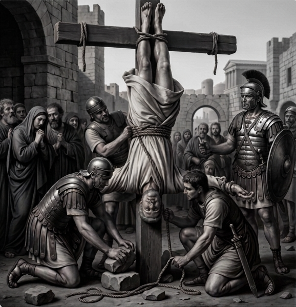
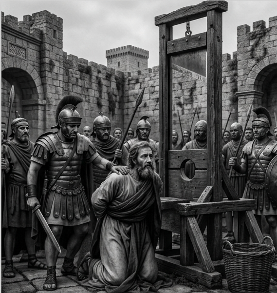

LA CRUCIFIXION INVERSA DE PEDRO
Bio de Pedro hecho por la I.A.
Juan 21:18-19
PROXIMAMENTE

Bio de Pedro hecho por la I.A.
Juan 21:18-19

Biografía de Pablo de Tarso
hecho por la I.A.
2 Timoteo 4:6-8
Biografía del apóstol Andrés
hecho por la I.A.
Juan 1:40-42